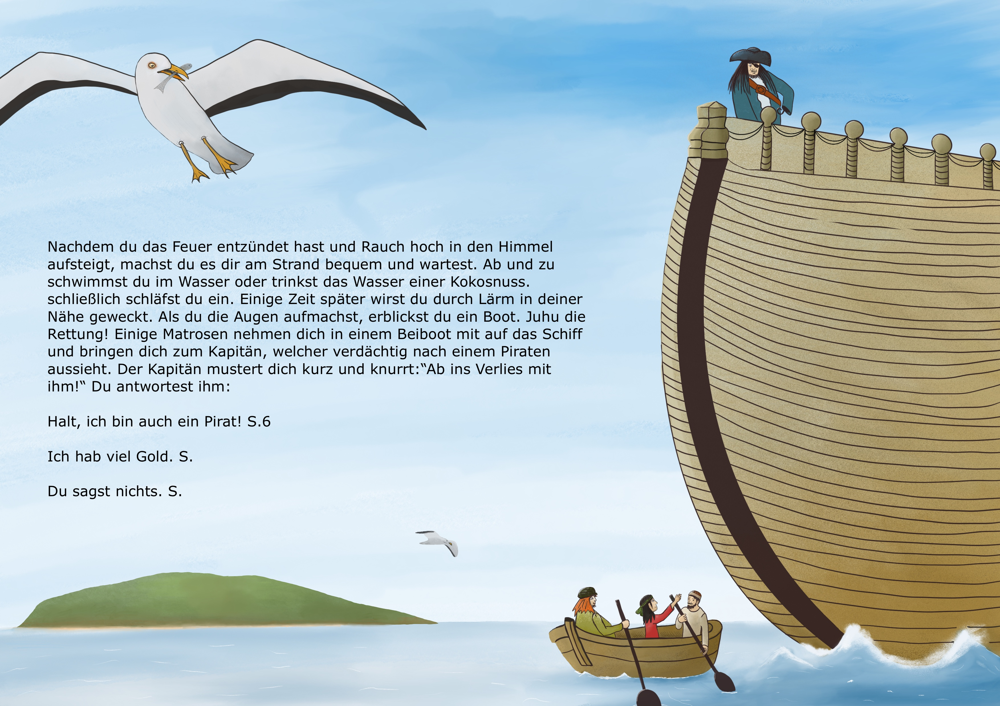

Nachdem du das Feuer entzündet hast und Rauch hoch in den Himmel aufsteigt, machst du es dir am Strand bequem und wartest.
Ab und zu schwimmst du im Wasser oder trinkst das Flüssige aus einer Kokosnuss. Schließlich schläfst du ein. Einige Zeit später
wirst du durch Lärm in deiner Nähe geweckt. Als du die Augen aufmachst, erblickst du ein Schiff. Juhu, die Rettung!
Einige Matrosen nehmen dich in einem Beiboot mit auf das Schiff und bringen dich zum Kapitän, welcher verdächtig nach einem
Piraten aussieht. Der Kapitän mustert dich kurz und knurrt "Ab ins Verlies mit ihm!". Du antwortest ihm:
Halt, ich bin auch ein Pirat! (Seite 7)
Ich habe viel Gold! (Seite 7)
Du sagst nichts. (Seite 7)